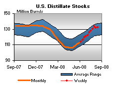
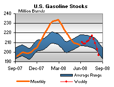

Released on August 20, 2008
(Next Release on August 27, 2008)
Driving to Disney World is Now Less Expensive
If someone asks Michael Phelps where he is going to go after winning eight gold medals at the Olympics and he responds, “I’m going to Disney World,” it would cost him less to drive there now than it would have earlier this summer. West Texas Intermediate (WTI) crude oil spot prices have dropped from a high of $145 per barrel as recently as July 14 to under $113 per barrel by August 18. As a result, the U.S. average retail price for regular grade gasoline has dropped from over $4.11 per gallon in early July to $3.74 per gallon as of August 18. So, why have crude oil and gasoline prices been dropping? Just as expected movements in supply and demand were the primary factors behind the increase in prices, so, too, are expectations about supply and demand the primary factors behind the recent drop, according to our analysis.
Through the first half of this year, analysts focused largely on strong continued growth in global oil demand even as prices kept rising, and on disappointment in growth of non-OPEC oil production. When oil market analysts and traders looked ahead, concerns about oil supply grew. Some countries, such as Russia, which was initially expected to contribute to oil production growth in 2008, were showing year-over-year declines each month as the data came in. Other non-OPEC countries also showed less growth than expected – or even declines in some cases. Meanwhile, oil demand growth in places like China, India, the Middle East, and South America seemed to show little, if any, demand response to high prices. However, more recent data have begun to show a shift in these trends.
On the supply side, some non-OPEC production, particularly in Brazil and Azerbaijan, is starting to see some of the promise that was expected earlier. Additionally, the increase in production from Saudi Arabia is helping to ease some of the market’s concern about having enough supply to meet consumption. But it is the consumption side of the market that has seen the most dramatic shift in expectations. Instead of focusing on consumption growth in Asia and the Middle East, focus shifted towards the sharp decline in U.S. oil consumption. At the end of July, EIA released oil consumption data for May that showed a year-over-year decline of nearly 900,000 barrels per day (bbl/d). This followed a year-over-year decline of nearly 800,000 bbl/d in April and over 900,000 bbl/d in the first quarter of 2008. The declines during the first few months of the year were not entirely surprising because of the significantly warmer weather and much higher prices relative to the same period in 2007. But, by the time May data were released in late July, it was clear that higher oil prices had taken a toll on the U.S. economy, a fact that became cemented in the minds of many analysts. Suddenly, the market was anticipating further oil demand declines elsewhere in the world, just as supply was beginning to increase. As a result, crude oil prices dropped fairly dramatically in a short period of time, along with prices for gasoline, diesel, and jet fuel.
So, where do we expect prices to go from here? While we are not quite as confident in forecasting the near-term path for oil prices as Michael Phelps might be about winning his next race, we do think that crude oil prices may settle in the $120 - $130 per barrel range for most of the remainder of the year, barring any additional major supply disruptions from hurricanes or other events such as the current conflict in Georgia. This is largely due to our projection that year-over-year declines in U.S. oil consumption will not be as large in the second half of the year, in part due to relatively weak consumption in the second half of last year and also to the perceived end of the upward surge in prices. Balancing out the forecasted decreases in U.S. consumption, we project relatively strong continued demand growth in non-OECD countries. Finally, as prices drop, Saudi Arabia may cut back on its recent increase in production, which could halt the most recent price decline. Of course, whether or not this scenario unfolds is anyone’s guess, but understanding the factors behind the increase and recent decline in oil prices is important in understanding what might come next in the prices we pay at the pump.
Diesel Prices Plunge Again
The U.S. average retail price for regular gasoline fell for the sixth week in a row, dropping another 6.9 cents. At 374 cents per gallon, the U.S. average price has plunged a total of 37.4 cents from the July 7 all-time high of 411.4 cents per gallon. Once again, the price on the East Coast dropped more than any other region, falling 9.8 cents to 370.1 cents per gallon. The smallest drop of any region occurred in the Midwest, where the price slid just 2.3 cents to 370.8 cents per gallon. The price in the Gulf Coast remained the lowest of any region, dropping another 8.6 cents to 359.9 cents per gallon. The Gulf Coast has had the lowest price of any region every week but one since May 26 and was down by more than 37 cents from its all-time high of 397.1 set on July 14. The price in the Rocky Mountain region dropped 6.5 cents to 388.8 cents per gallon. The West Coast price fell for the eighth consecutive week, dropping another 7.7 cents to land at 398 cents per gallon. The price moved below $4 for the first time since May 19, representing a cumulative plunge of 48 cents from the all-time high set on June 23. The average price in California retreated another 8.1 cents this week to 403.7 cents per gallon.
Average U.S. retail diesel prices plunged for the fifth consecutive week, losing another 14.6 cents to hit 420.7 cents per gallon, a drop of 55.7 cents from the all-time high reached on July 14. Despite the decline, the average U.S. diesel price was still 133.9 cents higher than it was a year ago. The average price on the East Coast tumbled another 15.7 cents to 426.3 cents per gallon. Although the price drop of 13.7 cents in the Midwest was the smallest of any region, the resulting price remained the lowest of any region, at 413 cents per gallon. The average price in the Gulf Coast fell 14.3 cents, to 415.6 cents per gallon. In the Rocky Mountains, the price sank another 15.4 cents to 431.9 cents per gallon. Shrinking another 15.5 cents, the West Coast price dropped to 435.6 cents per gallon, a decrease of more than 55 cents from the record set on July 14. In California, the average price plummeted another 18.5 cents to 442.2 cents per gallon.
Robust Propane Build Continues
Propane inventories at the primary level continued their robust pace last week, gaining 1.6 millions barrels to push inventories up to an estimated 50.8 million barrels as of August 15, 2008. However, in spite of the strong weekly build, propane inventories remain below the average range for this time of year. Gains were concentrated in the Midwest and Gulf Coast regions that reported inventories up by 0.5 million barrels and 1.0 million barrels, respectively. While Midwest inventories remain within the average range, Gulf Coast inventories remain well below the average range during this same time. East Coast and the combined Rocky Mountain/West Coast regions reported relatively flat inventories last week. Propylene non-fuel use inventories also remained flat last week but their share of total propane/propylene inventories was slightly lower at 5.8 percent, compared with the prior week.
Text from the previous editions of “This Week In Petroleum” is now accessible through a link at the top right-hand corner of this page.
| Retail Prices (Cents Per Gallon) | |||||||
| Retail Data | Changes From | Retail Data | Changes From | ||||
| 08/18/08 | Week | Year | 08/18/08 | Week | Year | ||
| Gasoline | 374.0 | Diesel Fuel | 420.7 | ||||
| Spot Prices (Cents Per Gallon*) | |||||||||||||||||||||||||||||||||||
|
|||||||||||||||||||||||||||||||||||
| *Note: Crude Oil WTI Price in Dollars per Barrel. | |||||||||||||||||||||||||||||||||||
| Stocks (Million Barrels) | |||||||
 |
 | ||||||
|  | |||||||
| Stocks Data | Changes From | Stocks Data | Changes From | ||||
| 08/15/08 | Week | Year | 08/15/08 | Week | Year | ||
| Crude Oil | 305.9 | Distillate | 132.1 | ||||
| Gasoline | 196.6 | Propane | 50.763 | ||||